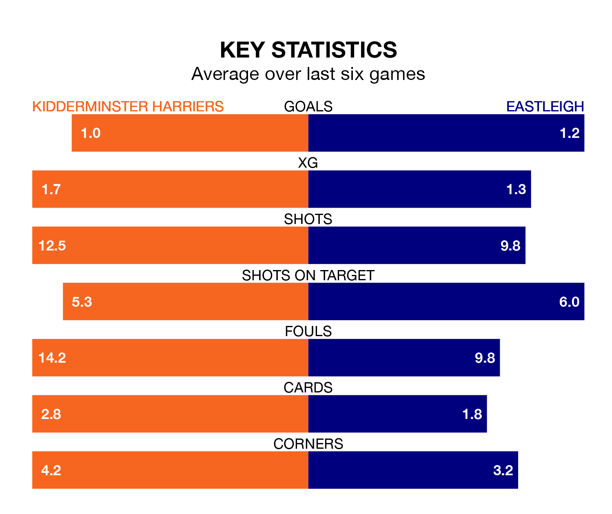

Kidderminster Harriers host Eastleigh on Saturday at the Aggborough Stadium in the National League.
In their last league match, on April 6, Kidderminster Harriers lost to Halifax Town 2-0 at home.
Eastleigh won, 1-0 away at York City, with Luke Croll scoring their goals.
Kidderminster Harriers are 22nd in the table after 44 games, of which they have won 11 and drawn 13, earning 46 points.
Eastleigh are six places ahead of Kiddy in 16th, with 14 wins and 11 draws putting them on 53 points.
With 39 goals in 44 games so far this season, the hosts are the league's lowest scorers with 0.9 goals per game. But they are conceding fewer than average too, letting in 54 goals at a rate of 1.2 per game.
The Spitfires, meanwhile, are above average scorers, with 1.7 goals per game, compared to a league average of 1.5. They have conceded 2.0 goals per game.
In the last 10 years, Kidderminster Harriers and Eastleigh have played each other on six occasions. Kidderminster Harriers won one of them and Eastleigh the other.
On average, Kiddy scored 1.2 goals and the Spitfires 2.2 in those matches.
Their last meeting was on September 23, when Eastleigh won 2-1 at home.
Kidderminster Harriers are in disappointing form in the National League, with one win and three draws from their last six games.
With two wins and a draw over that period, the away side's form is slightly better – they have taken seven points from 18, compared to Kidderminster Harriers's six.
Updated: 10:01 (UTC), 12/04/24